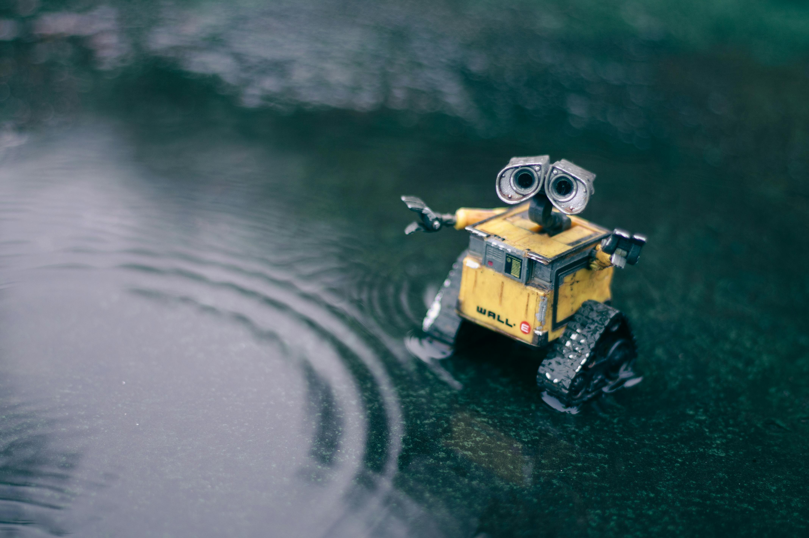
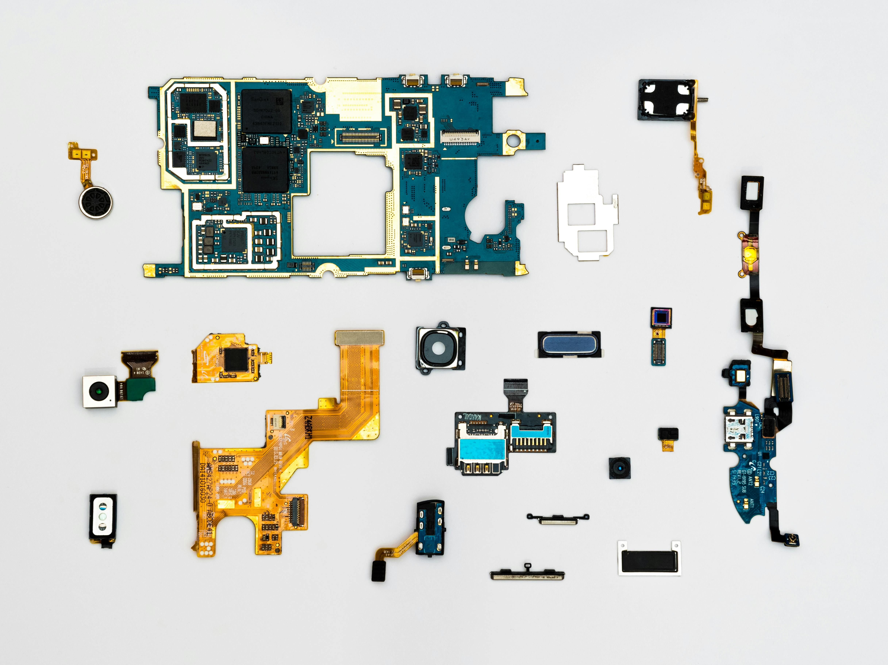

ROBOTICS
The latest developments in consumer robots, humanoids, drones, and automation
FOLLOW

Article
Sea Drones in the Russia-Ukraine War Inspire New Tactics Navy planners see a defensive role for drones in a China-Taiwan war
10 Jul 2024 | 10 min read |

video
Boston Dynamics and Toyota Research Team Up on Robots The partnership aims to make Atlas into a general-purpose humanoid
22 Oct 2024 | 13 min read |
video
How a Robot Is Grabbing Fuel From a Fukushima Reactor Like manipulating rovers on Mars, there’s little room for error
15 Sep 2023 | 8 min read |
Article
SwitchBot S10 Review: “This Is the Future of Home Robots” Plumbing integration for home cleaning robots
01 Oct 2024 | 11 min read |

Article
Detachable Robotic Hand Crawls Around on Finger-Legs The Handcrawler can go where arms can't reach—and still grab stuff
07 Oct 2024 | 3 min read |